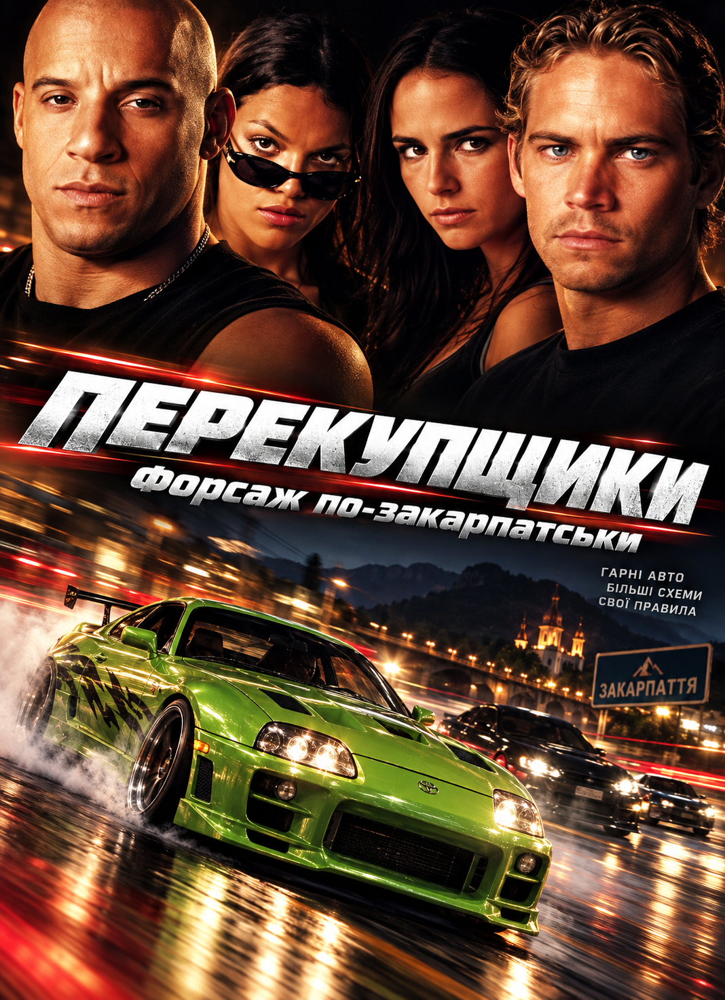

Перекупщики (Форсаж по-закарпатські)
Неофіційна авторська фан-озвучка. Натисніть кнопку Play на плеєрі для перегляду.

Про проєкт
Зведена мультитрекова аудіодоріжка, кастомний дубляж персонажів та колоритна діалектальна адаптація культового фільму.